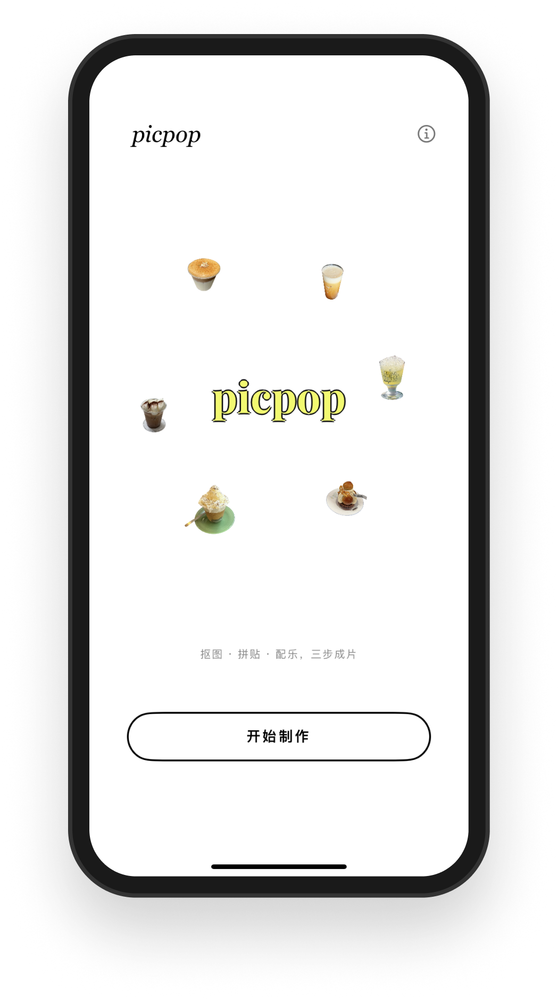
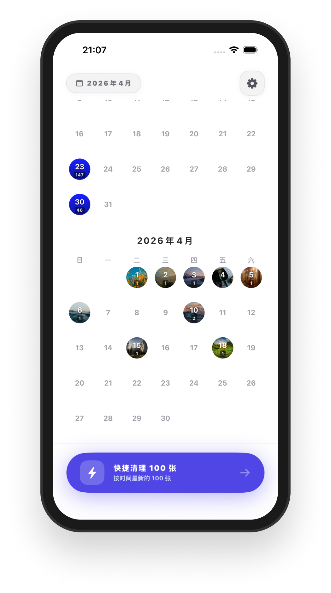
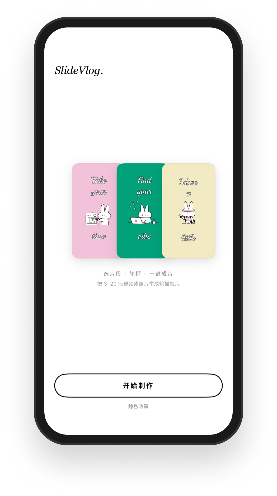
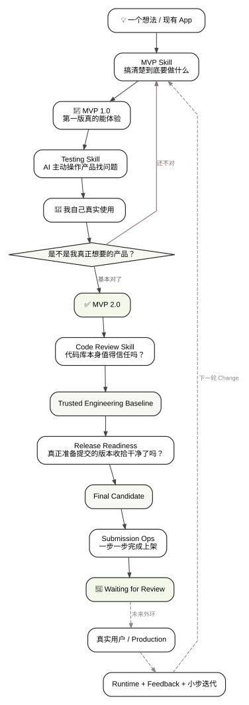
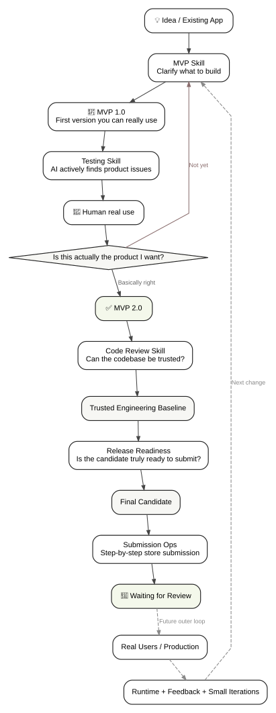
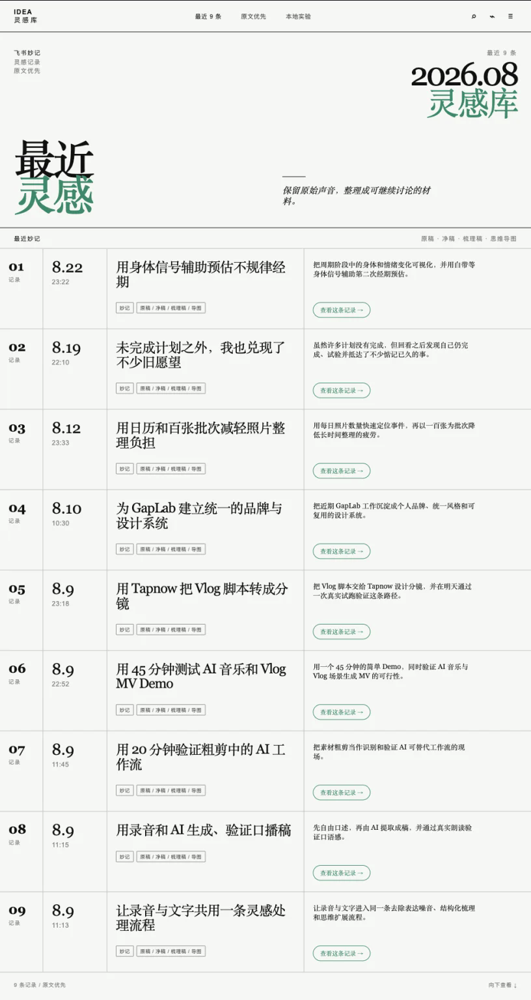
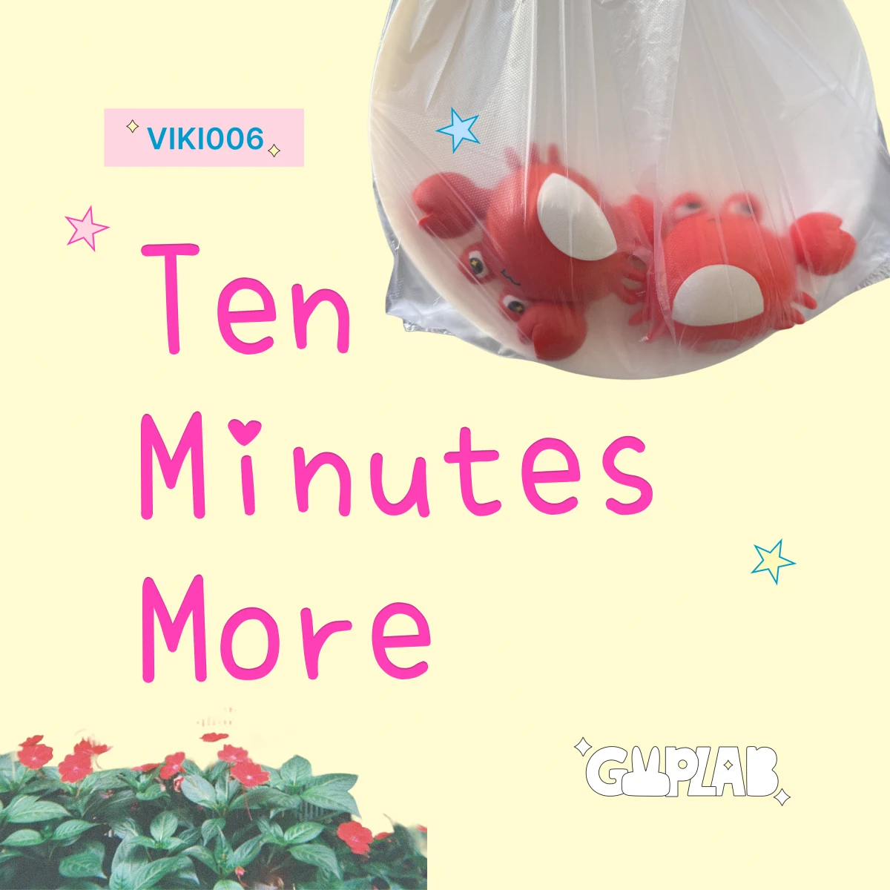

Video Learning Moments
看学习视频时，暂停、截图、切到 AI、再重新解释上下文，会不断打断学习节奏。我想让 AI 直接理解当前时间点、画面、字幕和上下文，在视频里完成解释与追问。
当前主要 AI 项目 · Context / RAG / Eval
少一次切换，
多留一点专注。
产品 × AI × 创作
我习惯从真实使用中的小摩擦出发，把观察变成产品，把想法真正做出来。
项目
有些已经发布，有些还在继续做。比起堆功能，我更想先讲清楚：它为什么会出现。
看学习视频时，暂停、截图、切到 AI、再重新解释上下文，会不断打断学习节奏。我想让 AI 直接理解当前时间点、画面、字幕和上下文，在视频里完成解释与追问。
当前主要 AI 项目 · Context / RAG / Eval
少一次切换，
多留一点专注。
已发布产品
重复做快切 / 拼贴片头很费时间，所以我把这件事压缩成一个更轻、更直接的创作流程。
前往 App Store ↗整理照片时，每一张都要重复判断和删除很烦，所以我把“判断”和“处理”做成更顺手的一条流程。
前往 App Store ↗日常 Vlog 不一定需要打开复杂剪辑器。我想保留的是“选完素材，很快就能做完一条”的轻量感。
前往 App Store ↗


iOS · 拍摄工具
旅行转场、连续动作或定格拍摄时，最烦的是下一镜很难对齐上一镜。FrameAlign 用 Ghost Frame 帮你快速找回上一镜的位置。
一个问题，一个核心功能
开发中
macOS · 工作流工具
AI 对话里上一条还没结束，下一条文字、图片或图文想法已经形成。Hold 让这些内容先放一边，等合适的时候再送出。
来自真实 AI 对话习惯
已验证
Browser Extension · Functional
让 Live Photo / HEIC 在网页上传时自动转换成兼容格式，不打断原本的上传流程。
功能可用
我的方法
我更习惯先从真实问题开始，把核心体验想清楚，再决定怎么做、用什么技术，以及哪些部分值得交给 AI。
先看真实使用里哪里反复卡住、哪里让人烦、哪里已经被默认忍受。很多项目都从这种很小的摩擦开始。
先看见，再解决。
不急着堆功能。先判断这个问题到底值不值得解决，如果整个产品只能保留一个功能，哪个绝对不能砍。
核心功能先于功能清单。
把核心体验做成真实闭环。产品、架构和设计由我做关键判断，实现和重复执行尽量交给 Agent。
人做判断，Agent 做执行。
先进入真实使用，再根据反馈、测试和独立验证继续调整。代码写完不等于产品已经可信。
完成不等于证据。
AI 如何进入我的工作流
我更喜欢从真实使用开始：先看哪里重复、哪里卡住，再决定 AI 到底应该帮我做哪一部分。
01 · 产品开发
做了几个真实 App 之后，我慢慢形成了一套更适合自己的 Human + Agent 开发方式：我负责产品、架构、设计和关键判断，Agent 负责实现、检查、测试与重复执行。
后来，我又把其中稳定、反复使用的部分整理成 App Development Skills。
在 GitHub 查看 App Development Skills ↗左右滑动查看完整流程 ↔



02 · 个人日常
用飞书妙记快速留下突然出现的想法，再让 AI 帮我整理、重新看见和继续讨论。
一个基于飞书妙记的个人灵感工作流：语音记录、轻整理 / 结构化整理、思维导图、AI Take 和周期性回顾。
灵感可以很快记下来，但之后很容易沉没；而普通 AI 总结又常常会在不知不觉中替用户改写意思。
复用飞书成熟的语音转写，把原始表达、轻整理和 AI 解读分开，再通过周期性回顾让旧想法重新浮现。
AI 创作实践
这里放的是我真实做过的 AI 创作实践：音乐和视频。它们也是我理解 AI 能力边界的另一种方式。

AI 音乐 · viki006
ChatGPT 协助风格分析、歌词和曲风迭代，Suno 负责音乐生成与版本尝试，最终通过 Amuse 完成发行。右侧可以直接试听真实音频片段。
已发布 6 首作品
AI 视频
我实际用过角色 / 人设、分镜、Prompt、Flow 等视频生成方式，也尝试过 AI 辅助剪辑。更重要的是在真实制作里持续判断：哪些环节交给 AI 更合适，哪些时候自己做反而更快。
关于我
我有多年软件工程背景，但我越来越确定，自己真正擅长、也最有兴趣的，不只是“把需求写成代码”，而是发现问题、判断什么值得做、把体验变简单，再把它真正做出来。
现在 AI 也正在成为我制作东西的一部分：有些项目本身真的需要 AI，例如 Video Learning Moments；另一些时候，Agent 更像开发伙伴，帮助我更快地研究、实现、测试和验证。我更关心它什么时候真的有价值，而不是把每个产品都变成“AI 产品”。
软件之外，我也会继续做音乐、视频和其他创作。对我来说，它们不是另一套身份，而是同一种观察、判断和制作方式在不同媒介里的延伸。
我会留意，也会动手做。